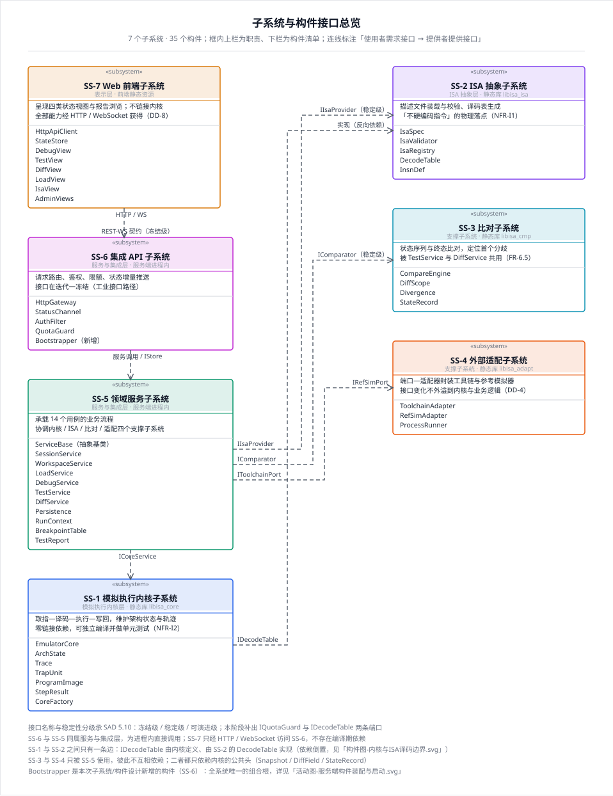
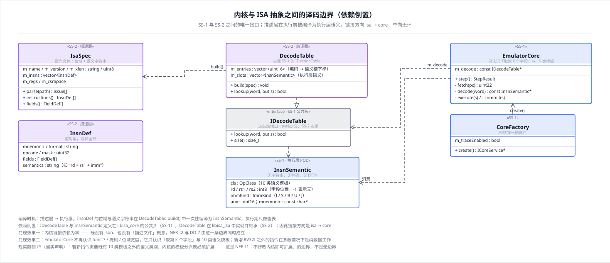
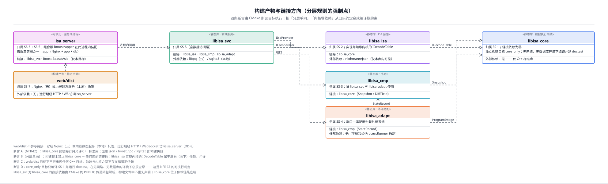
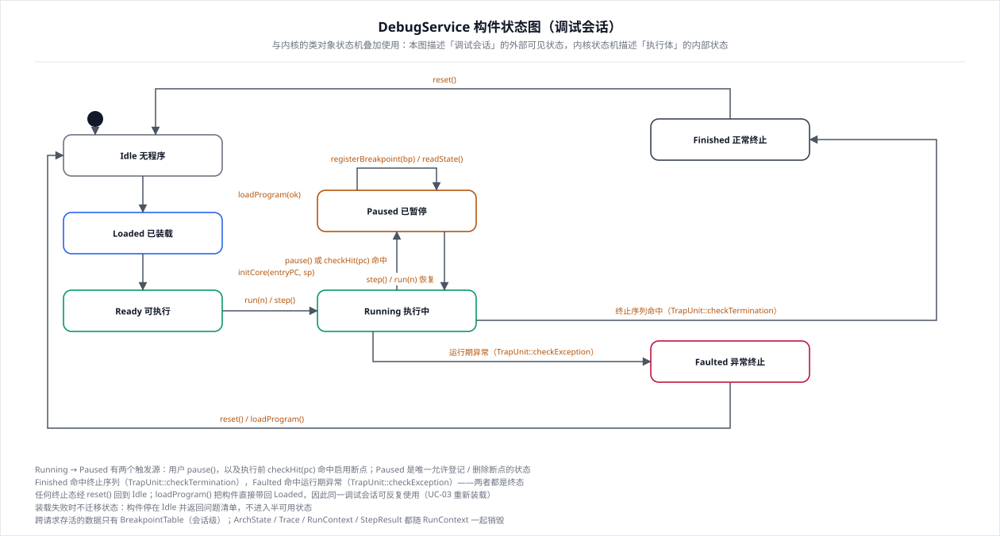
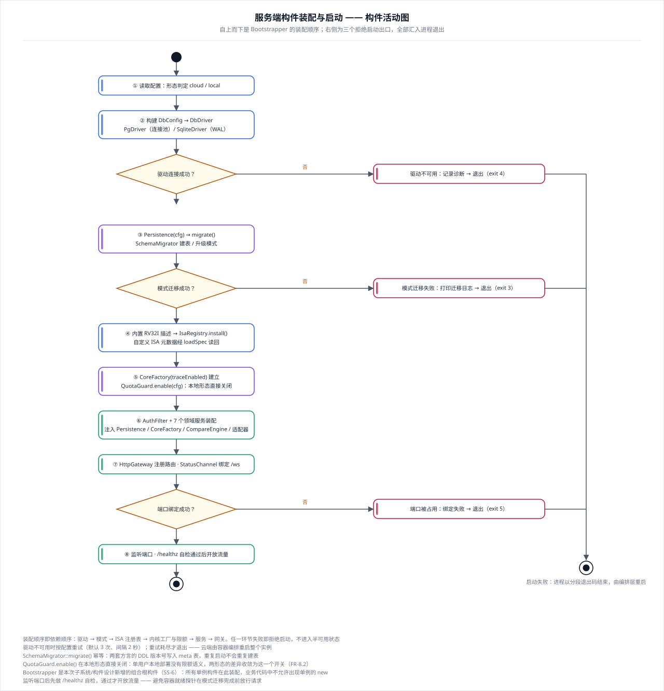

Bootstrapper）IDecodeTable）
框内上栏为职责、下栏为构件清单；连线标注为「使用者需求接口 → 提供者提供接口」。
SS-1 与 SS-2 之间只有一条边：IDecodeTable 由内核定义、由 SS-2 的 DecodeTable 实现（依赖倒置）。
SS-3 与 SS-4 只被 SS-5 使用，彼此不互相依赖；二者都只依赖内核的公共头（Snapshot / DiffField / StateRecord）。
SS-7 只经 HTTP / WebSocket 访问 SS-6，前端与内核之间不存在编译期依赖。

描述层（InsnDef：位域 + 语义字符串）在 DecodeTable::build() 中被一次性编译为执行层语义 InsnSemantic（OpClass + 字段位置 + 辅助选择子）。
IDecodeTable 与 InsnSemantic 定义在 libisa_core 的公共头（SS-1），DecodeTable 在 libisa_isa 中实现（SS-2）——因此链接方向是 isa → core，单向无环。
结果：内核链接依赖归零，且不再认识 funct7 / 掩码 / JSON。
现实限制 L5：新增指令若落在既有 10 类 OpClass 之内是纯数据工作；需要新语义类别时须扩展内核模板表——这是 NFR-I1 的边界，不是无边界。

断言 A（NFR-I2）：libisa_core 的链接行只允许 C++ 标准库 · 断言 B（分层单向）：禁止 libisa_core → 任何库 的链接边 · 断言 C：web/dist 下不得出现 C++ 目标 · 断言 D：core_only 目标在无网络、无数据库环境下必须跑通 doctest。
libisa_svc 对 libisa_core 的直接依赖由 CMake 的 PUBLIC 传递闭包解析，构建文件中不重复声明。

与阶段二的 状态图-EmulatorCore.svg 是叠加关系：本图描述「调试会话」对外可见处于什么阶段（决定哪些请求合法），内核状态机描述「执行体」内部处于什么阶段（决定 step() 的前置条件）。
终止态可经 reset() 回到 Idle；loadProgram() 把构件直接带回 Loaded，同一调试会话可反复使用。
跨请求存活的数据只有 BreakpointTable（会话级）。

装配顺序即依赖顺序：驱动 → 模式迁移 → ISA 注册表 → 内核工厂与限额 → 服务 → 网关 → 监听并自检。
任一环节失败以分段退出码结束进程，不进入半可用状态；QuotaGuard.enable() 在本地形态直接关闭，两形态差异收敛为这一个开关。
新增组合根构件 Bootstrapper（SS-6）：所有单例构件在此装配，业务代码中不允许出现单例的 new。

| 文件 | 内容 | 《子系统构件设计说明.md》对应章节 |
|---|---|---|
构件图-子系统接口总览.svg | 7 个子系统的职责、构件清单、提供/需求接口与依赖方向 | 三 ~ 九章 |
构件图-内核与ISA译码边界.svg | IsaSpec/InsnDef → DecodeTable → IDecodeTable/InsnSemantic → EmulatorCore | 三、四章；第十二章 DD-11 |
构件图-构建产物与链接方向.svg | 5 个静态库 + 可执行 + 前端产物；四条构建断言 | 三、九、十二章 |
状态图-DebugService构件.svg | 调试会话级状态机与迁移事件 | 11.1 |
活动图-服务端构件装配与启动.svg | 组合根装配次序、三个拒绝启动出口 | 八章；第十二章 DD-14 |
| # | 发现的问题 | 处置 |
|---|---|---|
| DD-11 | 内核与 ISA 抽象之间双向依赖；若内核链接 SS-2 就会间接引入 JSON 库，与 DD-7 / NFR-I2 冲突 | 引入 IDecodeTable + InsnSemantic 反转依赖，链接方向 isa → core |
| DD-12 | ICoreService 粒度太粗（执行 / 状态 / 创建 / 装载 / 断点注入混在一起）；loadImage() 与阶段二的 init() 重复 | 拆为 ICoreService / ICoreFactory / IBreakpointSink，删去 loadImage() |
| DD-13 | SAD 让「内核调用点」也调用 QuotaGuard，等于让内核反向依赖 SS-6 | 限额只在 HttpGateway 前置检查；上限改为 RunSpec.maxSteps 参数 |
| DD-14 | 双形态差异散落在各服务构造函数里，没有唯一装配点 | 新增组合根构件 Bootstrapper |